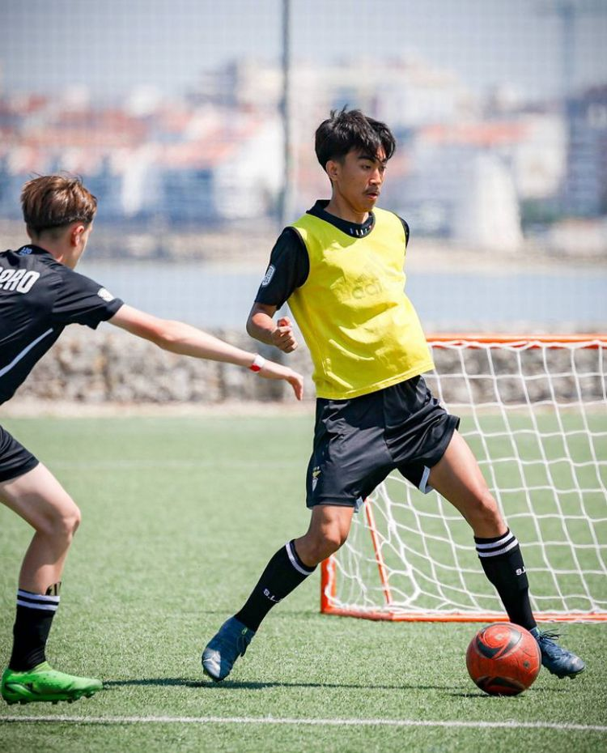
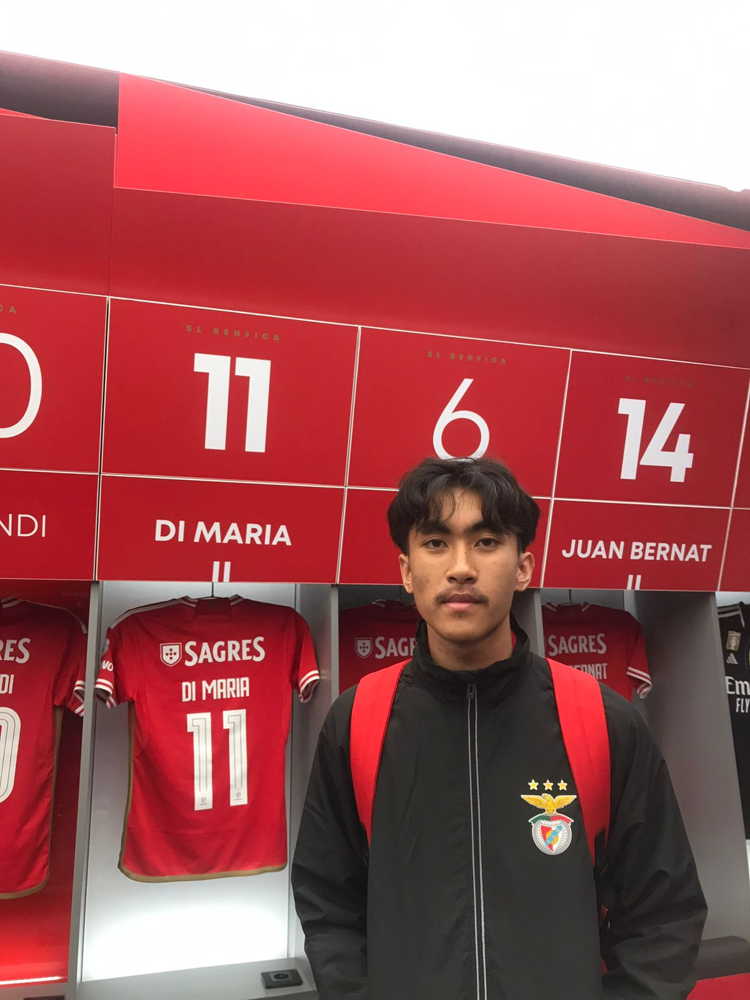
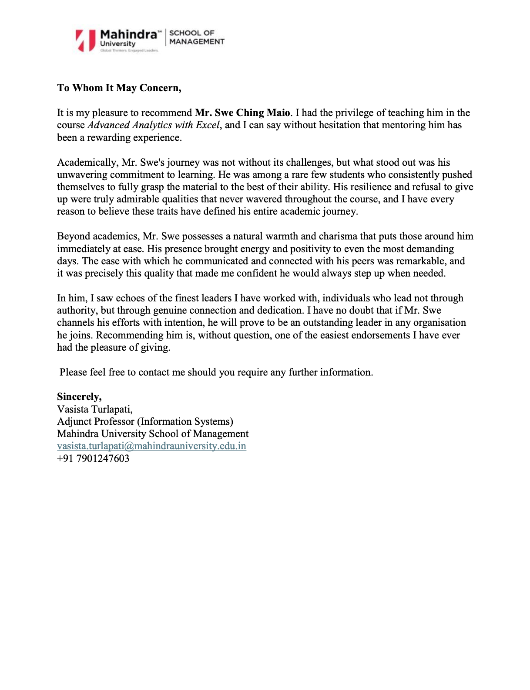

Business Focus
Developing capabilities in business development, digital marketing, analytics, and strategic decision-making.
Business Development | Digital Marketing | Data Analytics
"Transforming ideas into impact through business, technology, and strategy."
Summary
Developing capabilities in business development, digital marketing, analytics, and strategic decision-making.
Portfolio work spans sustainability consulting, legal research, and predictive analytics for customer targeting.
Football, academic recognition, and collaborative projects have strengthened discipline, resilience, and teamwork.
About Me
"I don't just study business - I aim to build it."
I am a BBA student specializing in Digital Technologies at Mahindra University, Hyderabad, with strong interests in Business Development, Digital Marketing, Data Analytics, and strategy.
I believe meaningful business impact is created beyond classrooms through practical experience, collaboration, and continuous learning. My journey combines academic learning with real-world projects across sustainability consulting, analytics, and business law.
Receiving recognition through the National University of Singapore program and representing my university in football have strengthened my discipline, leadership, teamwork, and resilience.
This portfolio reflects my journey, experiences, and aspirations as I continue building skills at the intersection of business and technology.
Project / Research / Innovation

Consulting
Developed a market entry strategy for ERW, a carbon removal solution in sustainability markets.

Business Law
Conducted a detailed study of India's trademark registration framework under the Trade Marks Act, 1999.

NUS Analytics
Built predictive analytics models to identify customers likely to purchase vehicle insurance using Power BI and Orange.
Experience & Education
ERW Market Entry Strategy
Trademark Registration in India
BBA - Digital Technologies
Senior Secondary (Class XII) - CBSE | Commerce with Entrepreneurship
Secondary (Class X) | Focused on Business Studies and Digital Skills
Extra-Curricular Activities

Representing Mahindra University in football has shaped teamwork, composure under pressure, and disciplined training habits.
Exposure to elite coaching through the S.L. Benfica Summer Training Program strengthened discipline and confidence.

Structured training and competitive environments helped build resilience, focus, and leadership habits.
Certifications
National University of Singapore | 9 June to 19 June 2025
National Institute of Securities Markets | 02-Nov-2025
Certificate of Completion | May 25th, 2026
Recommendations

"His resilience and refusal to give up were truly admirable qualities that never wavered throughout the course."